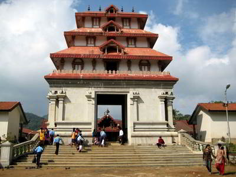
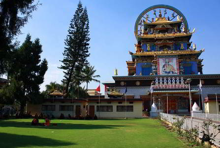
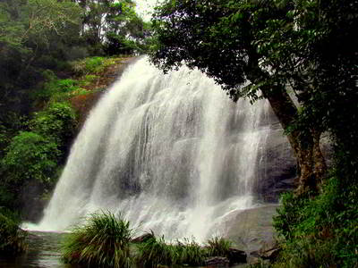
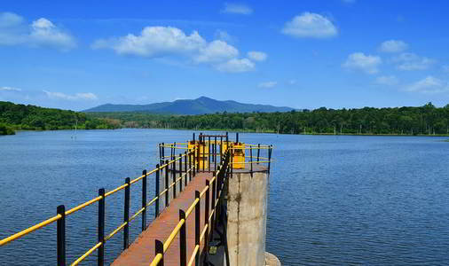
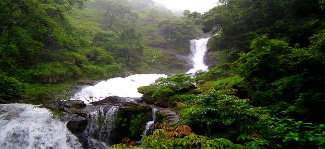
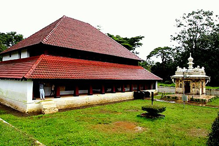
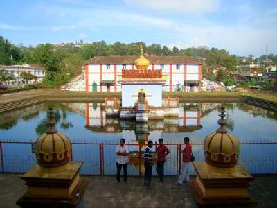
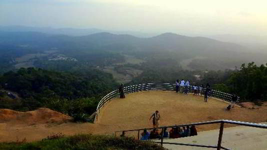
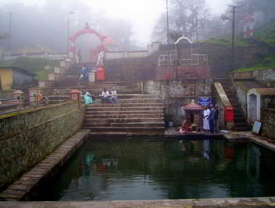

These are the main places that we will be covering in and around Coorg (alphabetically sorted)
Bhagamandala

Bhagamandala is situated at the confluence of two rivers, the Kaveri and the Kanika. A third river, the Sujyothi is said to join from underground. It is considered sacred as a river confluence (kudala or sangama, in Kannada and Sanskrit). The temple here, built in Kerala style, has smaller shrines dedicated to various gods.
Bylakuppe

The Tibetan Monastery or the Tibet Camp as locally called is located around 6 kms from Kushalnagar town towards Mysore. This Tibetan settlement at Bailkoppa or Baylkuppe is the the second largest Tibetan settlement outside Tibet. There are over 7,000 monks and students at the Tibetan monastery. Bylakuppe Tibetan settlement consists of a number of small camps close to each other, and has a lot of monasteries, nunneries. Most famous among them are the large educational institution Sera, the smaller Tashilunpo monastery and Namdroling monastery.Apart from the calm and peaceful surroundings there are shopping centers near the temples where one can shop for traditional Tibetan items like costumes, statues, carpets, jewelery etc.
Chelavara Falls

Chelvara Falls is near Cheyyandane which is around 16 kms from Virajpet and is one of the most beautiful water falls in Coorg. Chelavara Falls is also called as Embepare by the locals meaning Tortoise Rock. The water fall is really a wonder full view as the water gushes from the top amidst the green coffee plantation.
Chiklihole Dam

Chicklihole Dam is not among the best tourist spots but it’s definitely a nice and calm picnic spot.
Iruppu Falls

Iruppu waterfall is one of Coorgs major tourist attractions. Iruppu is a sacred place and is located in south Coorg on the Brahmagiri range of hills. River Lakshmana-tirtha flows nearby. According to legends Rama and Lakshmana, passed this way in search of Sita. Lakshmana shot an arrow into the Brahmagiri hills and brought into being the river Lakshmana tirtha when Rama asked him to fetch some water.
Nalknad Palace

Nalknad Palace is located at the bottom of the highest mountain of Coorg Thadiyandamol. The palace has 2 levels and the walls and roof are decorated with beautiful ancient paintings and architecture. According to history after escaping from Tippu sultan’ s troops Dodda Viraraja (Doddavirarajendra) built this palace at Yavakapadi in Nalknad area. Dodda Viraraja married Mahadevammaji in this palace itself.
Madikeri | Raja's Seat
Madikeri | Omkareshwara Temple

Omkareshwara temple was built by Lingarajendra in 1820. It is located just 1 km away from the heart of the Madikeri. The temple has both Islamic and Gothic style of architecture. There is a tank in front of the temple. There is a footpath leading to a small Mantap.

Raja’s Seat is a small pavilion with a garden surrounding it; offering a view of the green valley below. According to legend, the kings of Coorg spent their evenings here. The spectacular sunset and the far stretching blue mountains will take ones breath away.
Talacauvery

This is the origin of river Kaveri on the eastern slopes of Brahmagiri peak at 1350 metres altitude, about 8 km by road from Bhagamandala. Talakaveri temple CoorgAn enclosure around the spring called Gundige is connected to a small pond beside. The water from the pond goes underground and comes out after about one kilometer down the hill. There are three shrines above the spring and birds eye view of west-coast from the hill range.